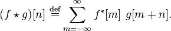
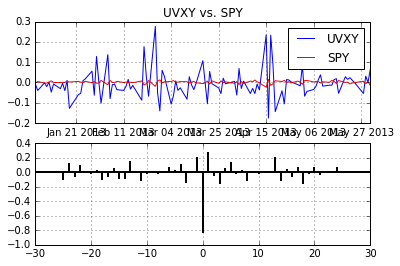
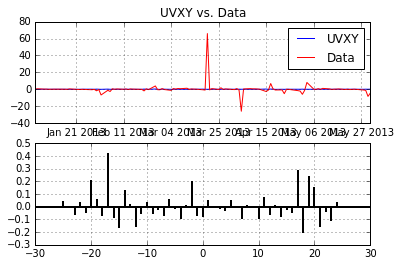

In the last article on time-series prediction, we talked about autocorrelation and how we can use it to determine if a signal has an underlying pattern. We saw that IBM (and most other equities) show little to no correlation when observed from a daily percent change.
This time, I want to introduce cross correlation. Cross correlation is a standard method of estimating the degree to which two series are correlated as a function of the lag of one relative to the other. Cross correlation of a discrete series is defined as:

Equities can be lonely by themselves
In the last article we were looking at individual discrete time series. This time, lets take a look at the cross correlation of UVXY and SPY:
plot_xcorr(uvxy_df['Adj Close'].pct_change(),spy_df['Adj Close'].pct_change(),"UVXY","SPY")

First thing we notice is the large negative correlation at lag 0. Unlike autocorrelation, a large magnitude at lag 0 can provide us with possibly useful information (that will have to be a topic for another day). We also notice a few other lags showing magnitudes above 0.2 which is something we did not see in the autocorrelation plot of random noise. Ideally, we would like to take advantage of correlations at lag $(n<>0)$.
Now lets look at the signal UVXY and another time-series that shall (for now) remain nameless:
plot_xcorr(uvxy_df['Adj Close'].pct_change(),uvxy_df['Data'].pct_change(),"UVXY","Data")

Now we have something usable. There are some regression methods that could work with this. Right off the bat, we notice significant correlations at Lags -17,17,19. But what do these correlations mean in terms of discrete time-series forecasting? How can one take advantage of this information? Things need to get much more complicated before we can use this new knowledge.
Stay tuned..